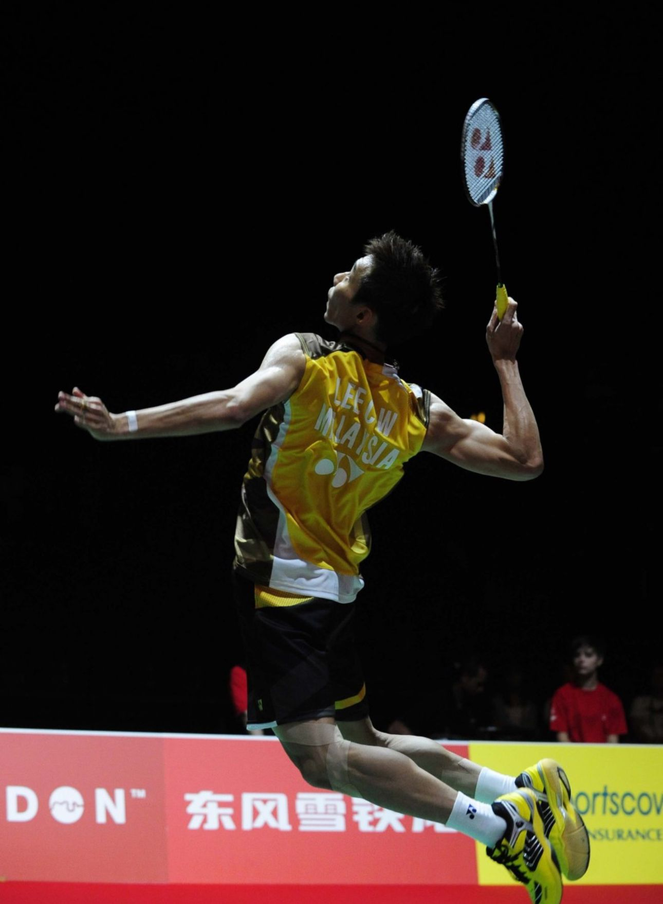
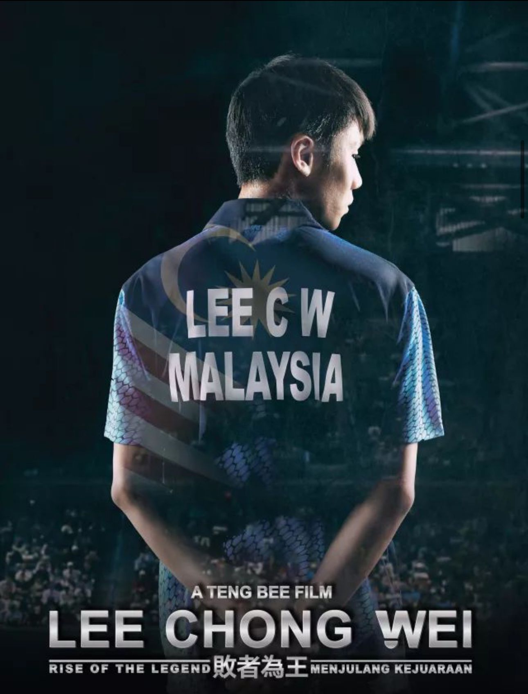

|  | 李宗伟，1982年10月21日出生于马来西亚槟城，祖籍福建省南安市，前马来西亚羽毛球男子单打运动员，被誉为马来西亚羽球一哥，是世界羽毛球界四大天王之一，2008、2012、2016年奥运会羽毛球男单亚军，获封拿督。 2004年，李宗伟首获马来西亚公开赛男单冠军。2005年，李宗伟逐渐取代黄综翰，成为马来西亚男单头号选手。2006年1月，李宗伟首次登上羽毛球世界排名第一的位置。2008年初，李宗伟首次获得世界羽联超级系列赛总决赛男单冠军。8月，获得北京奥运会羽毛球男单亚军，成为马来西亚奥运会上第二位获得银牌的选手。2010年成为史上首个在世界羽联总决赛实现三连冠的球员。2012年8月，在伦敦奥运会男单决赛再次负于中国选手林丹，获得亚军。2014年，李宗伟陷入药检风波，并被禁赛8个月。2015年11月，首次获得中国羽毛球公开赛男单冠军。2016年8月20日在里约奥运会羽毛球男单决赛中失利，第三次获得奥运会亚军。10月获海军中校军衔。 2017年3月，第四次获得全英赛男单冠军。同年11月，获得中国香港羽毛球公开赛男单冠军。2018年3月16日，全英羽毛球公开赛1/4决赛，上演第40次“林李大战”，最终李宗伟0：2负于林丹。同年4月获得英联邦运动会羽毛球男单冠军。同年9月22日，马来西亚羽毛球协会确认李宗伟被诊断出“早期鼻癌”。 2019年6月13日，李宗伟宣布退役。2021年6月25日，李宗伟以健康为由辞去了东京奥运会马来西亚代表团团长的职务。2023年5月，李宗伟入选国际羽联名人堂。 主要奖项 2005年马来西亚公开赛男单冠军 2006亚洲锦标赛男单冠军 2010年世界羽联超级系列赛总决赛 2010年国际羽联最佳男运动员 2010、2011、2014年全英公开赛男单冠军 重要事件 羽联排名占据了825天的世界第一（截至：2014年12月） 2016年里约奥运会羽毛球男单亚军 |
李宗伟
|
 |
| 点此返回 |